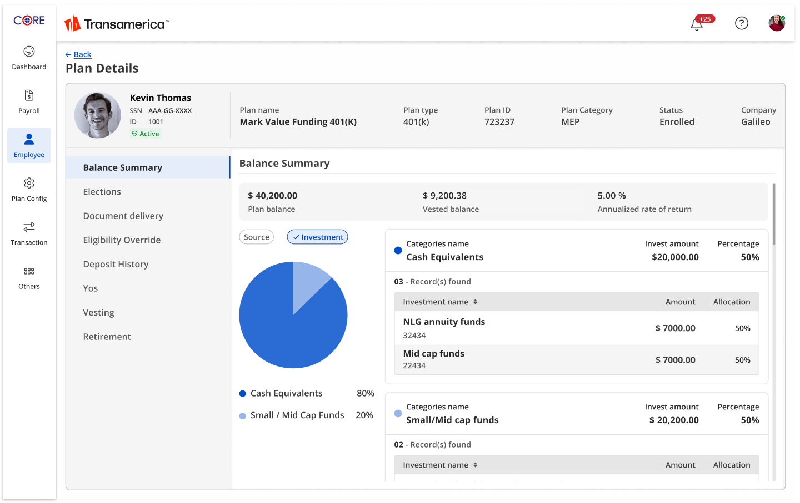
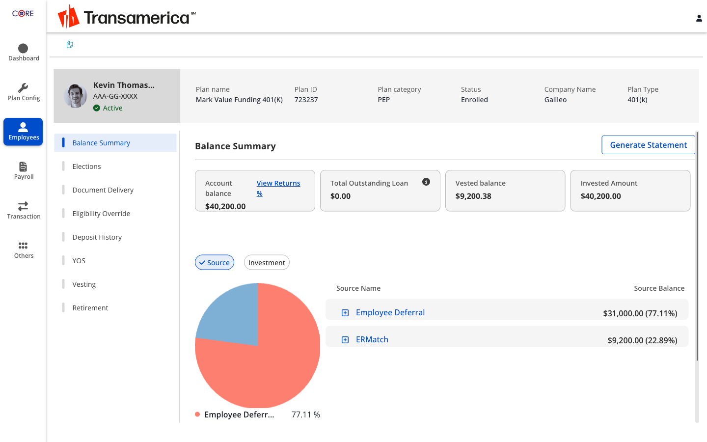
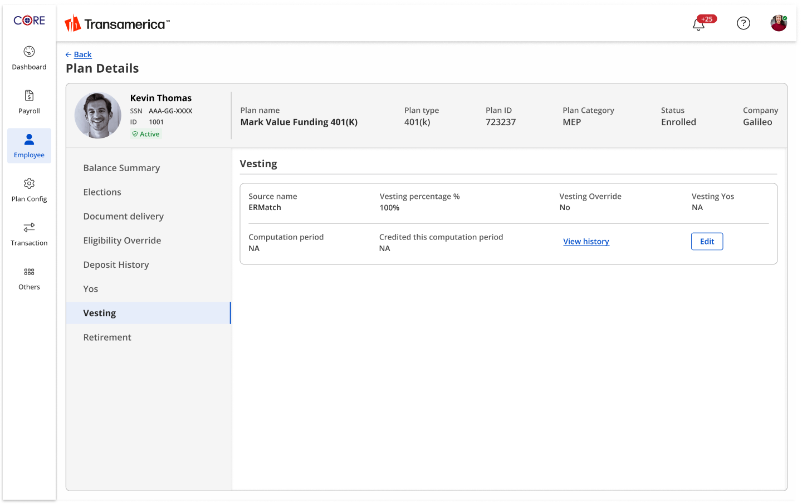
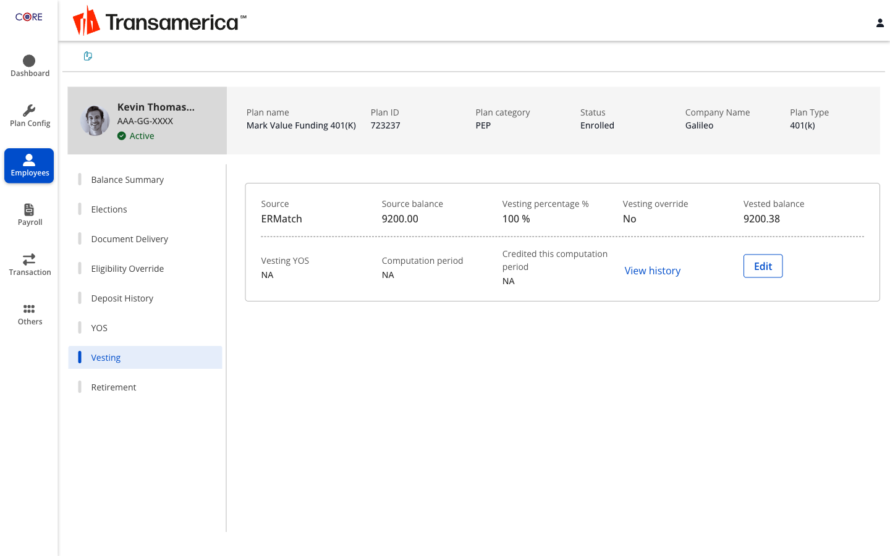
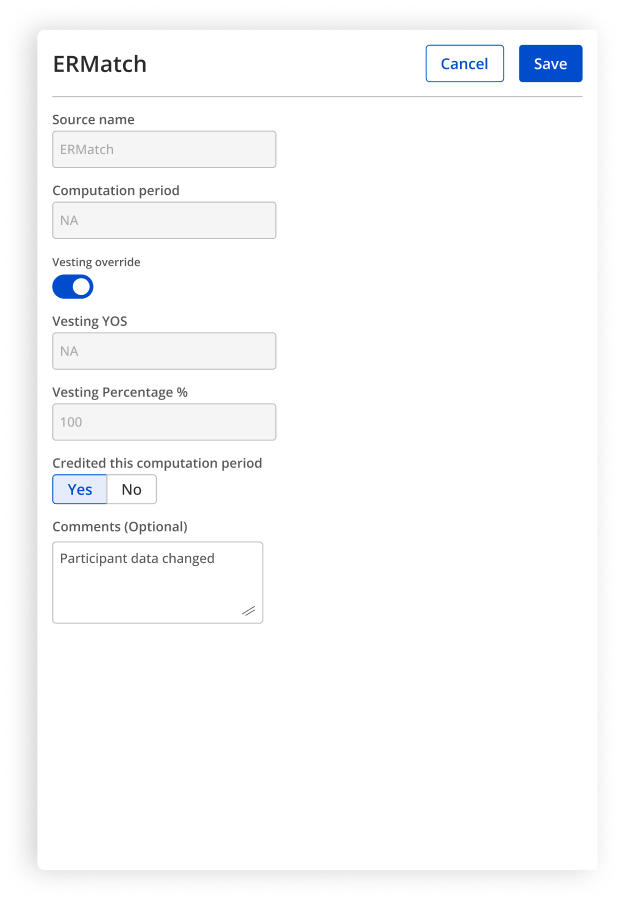
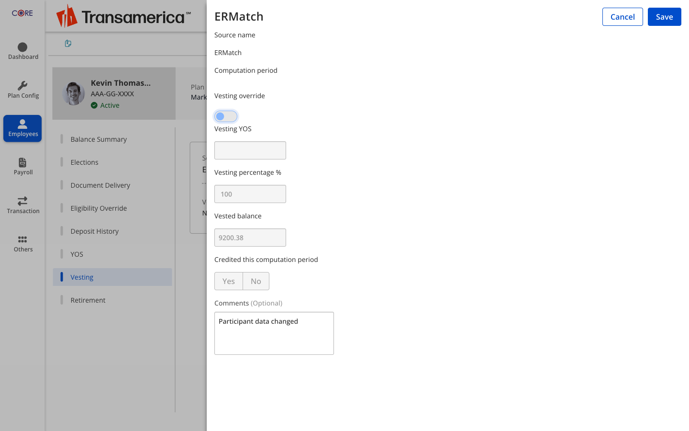

Each screen shows the Figma design on the left and the POC on the right. The POC runs the unchanged production components from the master repo with sample data for Kevin Thomas.
Why they differ. Figma is the new design. The POC uses only master-repo components, with no edits, so it shows how production looks today.
Every row in the tables below is a change the developers would need to make for production to match Figma.


| Area | Figma | Production today |
|---|---|---|
| Page title | “← Back” link and a Plan Details heading | Only a small notes icon |
| Summary figures | 3 figures in one grey strip: Plan balance, Vested balance, Annualized rate of return | 4 separate boxes: Account balance, Total outstanding loan, Vested balance, Invested amount |
| Extra button | None | “Generate Statement” button |
| Profile box | Name, SSN, ID 1001 and an Active badge | Name (cut off with “…”), SSN and Active. No ID |
| Plan details row | Plan type comes second; category shows MEP | Plan type comes last; category shows PEP |
| Chart | Investment view selected; two blue shades; category tables on the right | Source view selected; coral and blue; source list on the right |
| Top bar | Bell with +25, help icon, profile photo | User icon only |
| Left menu icons | Outline icons | Dashboard shows a grey circle (paid Pro icon not available) |


| Area | Figma | Production today |
|---|---|---|
| Vesting card | Source name, Vesting %, Override, YOS, then period fields with View history and Edit | Same fields and buttons, from the production CensusVestingCard |
| Page title and top bar | Back link, Plan Details heading, bell, help, avatar | Same gaps as on Balance Summary |


| Area | Figma | Production today |
|---|---|---|
| Panel width | 600px panel | About 70% of the screen (production SliderPanel default) |
| Fields | Source, Computation period, Override toggle, YOS, Vesting %, Credited Yes/No, Comments | Same fields in the same order, plus Vested balance |
| Field labels | Labels sit inside the input style from the Figma kit | Production labels sit above the inputs |
The zip has about 433 components. These already exist and could be used to build each Figma section without editing them.
| Figma section | Candidate components in the zip | Used in POC today? |
|---|---|---|
| Investment tables (Investment name / Amount / Allocation) | KendoTable, DataTable, CsplTable, CsplTableWithSort, ScrollTable | No |
| Top bar with bell, help and photo | HeaderNew, HeaderProfileDropdown, NotificationPopUp, Avatar | No (uses Header) |
| “Active” badge and Source / Investment chips | BadgeComponent, ChipButtonGroup | Partly |
| Profile box | EmployeeDetailsCard, EmployeeDetailsWithPlan, ProfileImage | Production version |
| Vesting card | CensusVestingCard | Yes |
| Edit slide-over | SliderPanel | Yes (default width) |
The POC loads the ready-made production page (EmployeeManagePlansModules) exactly as it is. That page already chooses its own pieces and layout: 4 balance boxes, the Source view and the plain header.
Matching Figma means writing a new page that arranges library components the Figma way. The components stay unchanged; only the arrangement is new code.
| Item | Owner | Why |
|---|---|---|
| Approval to build a new Figma-shaped page from library components | Product / design | Keeps the “no component edits” rule while matching the layout |
| Choice of the approved table, header and badge components | Design system team | Removes the duplicate problem |
Font Awesome Pro licence token (.npmrc) | Engineering | Real icons in place of grey circles |
| Confirmation that the API returns rate of return and plan category | Backend | Figma shows fields production doesn’t fetch today |
Suggested first step: rebuild Balance Summary with one library table and the new header layout, labelling every piece as “from library” or “new layout”.